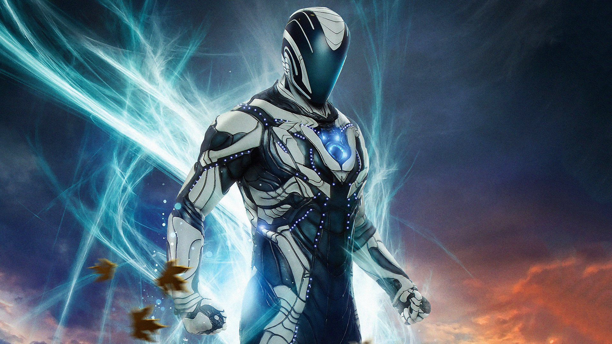
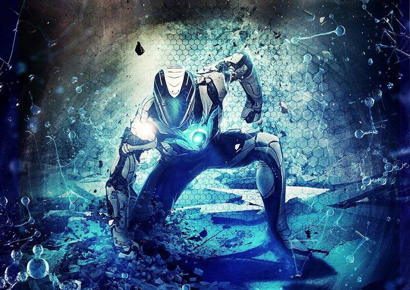

MAX STEEL O MELHOR HEROI
Max Steel é um agente secreto com super poderes que luta contra o mal, ele é o principal agente da organização anti-terrorista N-Tek.

Max Steel, até seus 19 anos era apenas Josh McGrath, um esportista radical e estudante, adotado por Jefferson Smith.

Qual é a história do Max Steel?
Originalmente ele era um jovem chamado Josh McGrath que perdeu os pais e foi adotado por Jefferson. Fascinado por ação e adrenalina ele se tornou agente após ser infectado por um experimento de nanomáquinas que se adaptaram a seu corpo lhe dando habilidades sobre-humanas.
Veja mais sobre o melhor heroi dos universos fantasiosos.